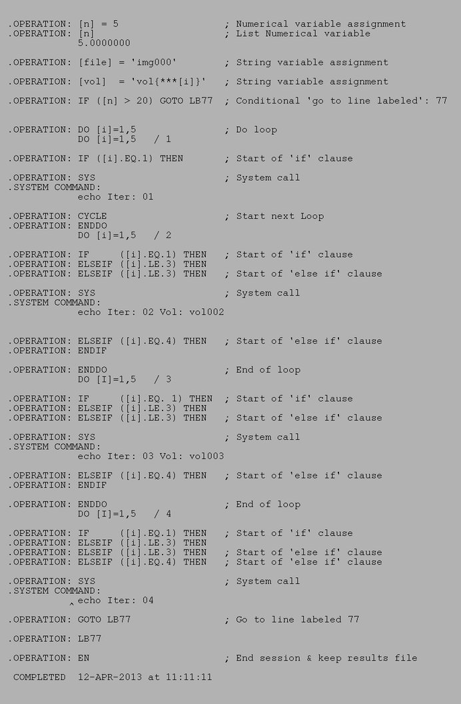

Usage Example - Scripting Operations
Scripting Operations
Procedure used:
./images/scripting.spi
.OPERATION:
[n] = 5
; Numerical variable assignment
.OPERATION:
[n]
; List Numerical variable
.
.OPERATION:
[file] = 'img000'
; String variable assignment
.
.OPERATION:
[vol] = 'vol{***[i]}'
; String variable assignment
with numerical substitution
.
.OPERATION:
IF ([n] > 20)
GOTO LB77
; Conditional go to line labeled 77
.
.OPERATION:
DO [i]=1,5
; Do loop
.OPERATION:
IF ([i].EQ. 1) THEN
; Start of 'if' clause
.OPERATION:
SYS
; System call
.OPERATION:
echo Iter: {**[i]}
.OPERATION:
CYCLE
; Start next Loop
.OPERATION:
ELSEIF ([i].LE. 3) THEN
; Start of 'if then' clause
.OPERATION:
SYS
; System call
.OPERATION:
echo Iter: {**[i]} Vol: [vol]
.OPERATION:
ELSEIF ([i].LE. 4) THEN
; Start of 'if then' clause
.OPERATION:
SYS
; System call
.OPERATION:
echo Iter: {**[i]}
.OPERATION:
GOTO LB77
; Go to line labeled 77
.OPERATION:
ELSE
; Start of 'else' clause
.OPERATION:
EXIT
; Exit early from the Loop
.OPERATION:
ENDIF
; End of 'else' clause
.OPERATION:
ENDDO
; End of loop
.
.OPERATION:
LB 77
; Labeled line
.OPERATION:
EN
; End session & keep results file
RESULTS FILE
